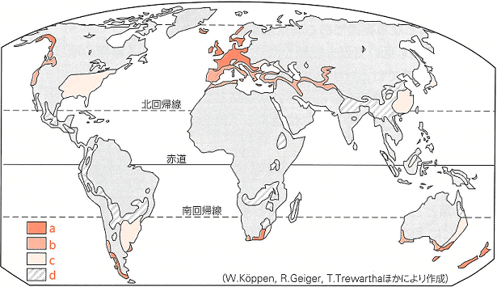
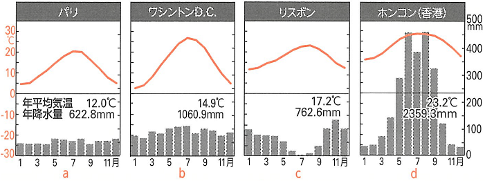
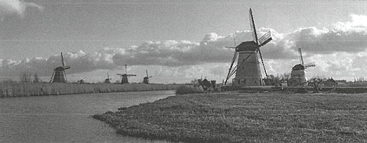

| 番号 | 問題 | 解答 |
|---|---|---|
| 1 | Cs気候で、夏が乾燥する要因となる気圧帯を何というか。 | 亜熱帯(中緯度)高圧帯 |
| 2 | Cs気候でみられるコルクガシなど葉が厚く乾燥や日射に強い硬葉樹の1つで、実が油に利用される木を何というか。 | オリーブ |
| 3 | Cs気候は冬になると降雨がみられる。その要因となる気圧帯を何というか。 | 亜寒帯低圧帯 |
| 4 | Cs気候では乾燥に強く、木に実をつけるブドウや柑橘類などの作物が栽培される。このような作物を何というか。 | 耐乾性果樹 |
| 5 | Cs気候で冬の降雨を利用して地中海沿岸で古代から栽培されてきた穀物は何か。 | （冬）小麦 |
| 6 | Cw気候の分布はCw気候と同じ降雨パターンをもつ熱帯気候の高緯度側にみられる。この熱帯気候を何というか。 | サバナ気候(Aw) |
| 7 | 大陸東岸でCw気候ができる要因となっている風を何というか。 | 季節風 |
| 8 | Cw気候の気候をいかし、中国南部やベトナム北部などでおこなわれている年に2度稲をつくることを何というか。 | 二期作 |
| 9 | Cw気候にみられるシイやカシなどの、表面につやがある常緑広葉樹を何というか。 | 照葉樹 |
| 10 | 温帯気候(C)の中で四季が明瞭で、気温の年較差が大きい気候を何というか。 | 温暖湿潤気候(Cfa) |
| 11 | ブナなどの広葉樹とマツやスギなどの針葉樹が混合して生えている森林を何というか。 | 混合林 |
| 12 | おもに温帯の落葉樹林帯にみられる暗褐色で肥沃な土壌を何というか。 | 褐色森林土 |
| 13 | アメリカのミシシッピ川西側に広がる長草がみられる平原を何というか。 | プレーリー |
| 14 | アルゼンチンのラプラタ川流域に広がる草原地帯のうち、温帯気候(C)に属する東側の降水量550mm以上の地域を何というか。 | 湿潤パンパ |
| 15 | ヨーロッパの気候に大きな影響を与えいている海流(暖流)を何というか。 | 北大西洋海流 |
| 16 | 15の上空の温かな大気をヨーロッパに運ぶ役割をもつ恒常風を何というか。 | 偏西風 |
| 17 | Cfb気候にみられる家畜と商品作物栽培を組み合わせた農業形態を何というか。 | 混合農業 |
| 18 | 17の地域よりも気温が低く作物栽培が難しい地域でみられる家畜を中心とした農業形態を何というか。 | 酪農 |
| 19 | 温帯気候(C)の中で、世界有数のリゾート地として利用されることもある場所がある気候を何というか。 | 地中海性気候(Cs) |
| 20 | 温帯気候(C)の各地においてみられ、特にインドや中国のCw気候で栽培が盛んな、高温・多雨で水はけのよい傾斜地で栽培される作物は何か。 | 茶 |


